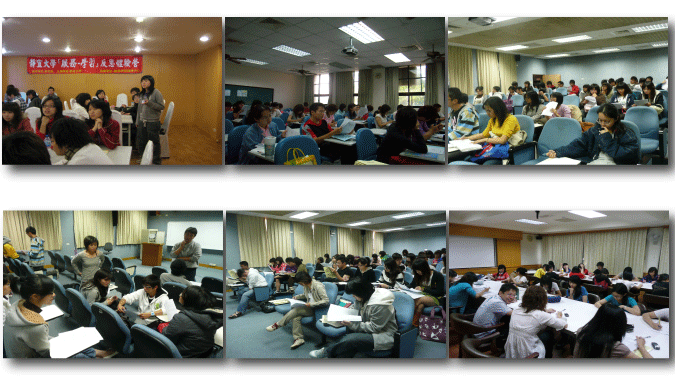

靜宜大學服務學習發展中心學生助理管理要點
民國105年05月03日服務學習發展中心會議通過
第一條 為健全服務學習課程之推展，建構服務學習學生助理之制度，以提升服務學習發展中心(以下簡稱本中心)學生助理(課程助理與教學助理)之自我成長、相互支持與跨領域之互動，培養學生主動關懷、領導統御之能力，建構服務學習學生助理之制度，特訂定靜宜大學服務學習學生助理管理要點(以下簡稱本要點)。
第二條 本中心學生助理分為以下四類：(一)「大一服務學習課程」課程助理：為學校授課老師、機構督導及服務學習學生之橋樑，主要服務對象為修習服務學習課程之大一學生。
(二)專業服務學習教學助理：為有效協助學生、教師與機構督導順利完成進行專業服務學習課程暨制度，特設立專業服務學習教學助理(簡稱TA)。
(三)進階助理：進階助理為本中心與學生助理之橋樑，主要服務對象為學生助理。
(四)高階助理：為有效領導與聯繫進階助理，由本中心從進階助理名單中推選1至2名高階助理，擔任本中心與進階助理之橋梁。
第三條 招募
(一)「大一服務學習課程」課程助理：透過公開招募或服務學習授課老師推薦，並通過本中心面試、篩選，經主任核定後始可任用。
(二)專業服務學習教學助理：每學期開學初公告專業服務學習計畫TA申請表，由欲申請之教師及單位主管，自行選任適合之學生擔任。凡通過申請者，中心提供每案一名TA協助課程與服務之運作，支應TA人力經費補助。
(三)進階與高階助理：透過公開招募，並通過本中心面試、篩選，經主任核定後始可任用。
第四條 申請資格
(一)「大一服務學習課程」課程助理：
1.大二以上學生為主，且修畢大一服務學習課程，對於服務學習理念推展具有熱忱者。
2.具有豐富的社團/活動帶領經驗或志工服務經驗者，須提出具體的佐證資料。(二)專業服務學習教學助理：大二以上學生為主，具備服務經驗及良好溝通能力，能促使學生能在服務過程中有所學習與成長，達到專業服務學習之最大效果。
(三)進階與高階助理：1.曾擔任大一服務學習課程助理一年(含)以上者。
2.曾擔任專業服務學習課程助理一年(含)以上者。
3.具有豐富的社團/活動帶領經驗或志工服務經驗者，須提出具體的佐證資料。
學生助理若有下列情事之一者，不得提出申請：(一)曾經於服務學習課程期間表現不佳者。
(二)曾經擔任課程助理或教學助理，且經本中心評核後不適任者。
第五條 聘任
(一)「大一服務學習課程」課程助理：以一學年一聘為原則。
(二)專業服務學習教學助理：以一學期一聘為原則。
(三)進階與高階助理：以一學期一聘為原則。
第六條 解聘：若有違反前述課程規定與學生助理工作內容，若經多次勸導仍未改善者，本中心得無條件予以解聘，其助理津貼則依實際服務時數核發，但不發給服務證明書。
第七條 學生助理任用期滿，可向本中心申請服務證明書。如因特殊事由，須提前申請者，可向本中心申請核發簡易服務證明書。
第八條 工作內容
(一)「大一服務學習課程」課程助理：
1.平時關懷：提供修課學生在「服務學習」課程修習過程中的相關協助，如進行社區服務前的準備、交通規劃、確認機構服務時間、排定服務日期及提供服務建議等事宜。
2.社區服務規畫：應主動聯繫機構督導，瞭解機構服務內容與交通規劃建議，協助機構辦理職前說明會，並陪同學弟妹進行社區服務，以適時提供服務建議與問題解決。
3.組別聚會：應參與進階助理辦理之組別聚會，並於會議中分享與交流陪同服務狀況與近期工作規劃。
4.會議與培訓課程：每學期應出席期初工作說明會議與期末檢討會議，並參與本中心辦理之學生助理培訓課程。
5.其他交辦事項。
(二)專業服務學習教學助理：
1.協助授課教師教學事務：每週與授課教師協商教學事務，掌握教學進度。協助教師規劃課程專業服務活動。了解學生對課程的反應或意見以進行修正或解決。
2.聯繫與訪視服務機構：聯繫相關之社區機構以及溝通協調相關事宜，協助教師規劃之服務方案，與服務機構負責人保持良好的聯繫並且維持良好的互動。
3.TA帶領學弟妹或同學執行服務方案：帶領學弟妹及同學進行社區服務，並不定期回報老師及中心服務過程問題，做為聯繫與溝通之角色。
4.參加每月「專業服務學習TA座談會議」：會議中TA須報告教學進度與服務狀況，以助中心瞭解TA帶領學生進行服務情形，給予關心與支持，提供解決策略。
5.協助教學卓越計畫及其他行政事務：TA應準時繳交紀錄表單與成果報告書。
(三)進階助理：
1.平時關懷：負責關懷5至8名學生助理(視該學期進階助理招募狀況調整各組人數安排)，傳承學生助理帶領經驗，並且透過E-mail、電話、面談及網路社群等方式不定期關心進階助理工作規劃與進度。
2.組別聚會：每學期辦理2至3次學生助理組別聚會，彼此鼓勵與支持，並撰寫組別聚會紀錄。
3.進(高)階助理工作會議：每月應出席進(高)階助理工作會議，分享與交流組員帶領心得與近期工作規劃。
4.其他交辦事項。(四)高階助理：
1.平時關懷：提供進階助理服務過程中的相關協助，如聚會帶領方式、組員互動技巧、文書撰寫等，並且透過E-mail、電話、面談及網路社群等方式不定期關心進階助理工作規劃與進度。
2.組別聚會：每學期辦理2至3次學生助理組別聚會，彼此鼓勵與支持，並撰寫組別聚會紀錄。
3.進(高)階助理工作會議：每月安排與主持進(高)階助理工作會議，規劃相關課程與聯絡聚會活動，並撰寫每月進(高)階助理工作會議紀錄。
4.其他交辦事項。
第九條 學生助理應於每月30日準時繳交工作紀錄。遲交或缺交工作紀錄者經勸導仍無改善者，將影響其助理津貼核發與續聘資格。
(一)「大一服務學習課程」課程助理：應詳實記錄學生服務情形與個人工作規劃，於規定時間內準時繳交工作紀錄，並繳交予本中心業務承辦人及服務學習授課老師。
(二)專業服務學習教學助理：1.每月須撰寫「工作紀錄表」、「特色文稿」等相關文書資料，並提繳中心以利掌握每月工作狀況以及教學卓越計畫之工作報告。
2.需完成成果報告書，供教學卓越計畫及各系所評鑑之用。
3.協力單位簽定「專業服務學習機構合作意向書」，建立本校與社區機構合作關係，保障學生學習權益。(三)進階與高階助理：應詳實記錄學生助理關懷情形與個人工作規劃，於規定時間內準時繳交工作紀錄與相關會議紀錄，並繳交予本中心業務承辦人。
第十條 培訓
第十一條 津貼：依規定給予補助。(一)為提升學生助理服務知能，本中心得依業務規劃與學生助理工作需求辦理培訓課程，全程參與者頒發研習證明書。
(二)學生助理每學期應參加3場次培訓課程，以提升其服務知能與自我成長。
(一)「大一服務學習課程」課程助理：1.每學期應完成一單位之服務帶領（每單位原則上帶領學生人數為20人，並完成10小時陪同服務與8小時行政服務）。
2.若帶領學生人數超過一個單位，則按比例類推補助助理津貼，最高不超過三個單位。(二)專業服務學習教學助理：TA人力經費補助由教學卓越計畫支付，每學期需服務時數為112小時。
(三)進階與高階助理：每學期服務時數為20小時，並視本中心預算情況彈性調整每學期服務時數。
第十二條 獎勵：學生助理表現優異者，除發予表揚獎狀外，並依規定給予相關獎勵。
第十三條 本中心於每位學生助理服務期間內，皆提供意外險之保障。
第十四條 本要點未盡事宜，悉依據本校相關辦法規定辦理。
第十五條 本要點經服務學習發展中心會議通過，公告實施，修正時亦同。
